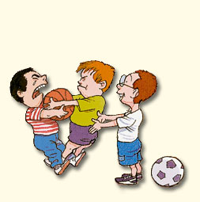

מהו גישור
הגישור מוגדר כהליך וולונטרי, בו צד שלישי, ניטראלי, מסייע לצדדים לנהל ביניהם משא ומתן ישיר ובונה למציאת פתרון מספק ומוסכם לסכסוך הקיים מבלי שיהיה בידו כוח לכפות עליהם פתרון כלשהו.
- הליך: גישור הנו תהליך מובנה ומוגדר בעל שלבים ברורים, אשר מוביל את הצדדים לפתרונו של הסכסוך. הבניית הליך הגישור מסייעת לפתרון המחלוקות בסביבה רגועה יותר ולהבנה מעמיקה יותר של צרכי הצדדים.
- וולונטרי: הצדדים נמצאים בהליך הגישור, לכל אורכו, מתוך בחירה רצונית להשתתף בו ולנסות להגיע לפתרון במסגרתו.
- צד שלישי: המגשר בגישור ישראל הנו חיצוני לסכסוך. ומסייע מניסיונו הרב לפתרון המחלוקות.
- ניטראלי: למגשר המקצועי אין כל עניין ומעורבות אישית בסכסוך שבפניו, בתוצאתו, או בהיכרות עם מי מהצדדים. ומטרתו הינה לסייע לצדדים לסיים את הסכסוך בדרך המיטבית האפשרית.
- מסייע: תפקיד המגשר לסייע לצדדים להגיע להבנה, המגשר בעזרת ניסיונו יוביל את הצדדים לפתרון מספק ומוסכם.
- משא ומתן ישיר: הליך הגישור מנסה לשקם את יכולת הצדדים לנהל משא ומתן ישיר ביניהם, באמצעות הסיוע של המגשר. כמובן שגם במקומות בהם מו"מ ישיר כמעט, או בכלל לא אפשרי המגשר ישכיל לבנות הבנות שיוליכו לסיום הסכסוך.
- פתרון מספק: הפתרון המספק מתאים לצורכיהם של הצדדים כפי שהם הובהרו והוגדרו על ידם בעזרת המגשר לקראת ובמהלך הגישור.
- פתרון מוסכם: אחד היתרונות של הגישור הינו שהפתרון הינו פרי בחירה מוסכמת של הצדדים ומכאן הוא גם הטוב האפשרי בתוך המציאות בה נתונים הצדדים לסכסוך.
- מבלי שיוכל לכפות: למגשר אין סמכות הכרעה בסכסוך, אולם עו"ד בר לב הינו מנוסה ביותר ויסייע להוביל את הצדדים לגישור להסכמה ראויה וטובה